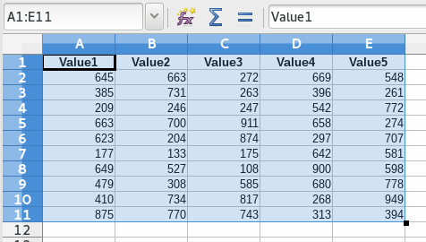
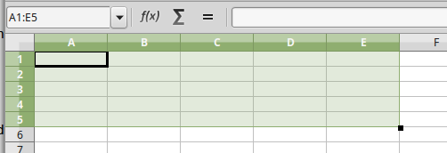

Tools¶
Show info PC¶
Sub ShowInfoPC()
util = createUnoService("org.universolibre.EasyDev")
'Operator System
util.msgbox(util.OS)
'App Name
util.msgbox(util.APP_NAME)
'App Version
util.msgbox(util.APP_VERSION)
'App Language
util.msgbox(util.LANGUAGE)
'Size screen
util.msgbox(util.getSizeScreen())
' https://docs.python.org/3.3/library/platform.html
' Get info PC:
' name user,
' name pc
' system/OS name,
' machine type,
' Returns the (real) processor name
' string identifying platform with as much useful information as possible,
util.msgbox(util.getInfoPC())
End Sub
Make question¶
Sub Question()
util = createUnoService("org.universolibre.EasyDev")
title = "My App"
message = "Is easy Python?"
res = util.question(title, message)
'If Yes return True, else return False
util.msgbox(res)
End Sub
Render string¶
Render text and replace arguments.
Sub RenderString()
util = createUnoService("org.universolibre.EasyDev")
'Used NamedValue
message = "Hello $data with $language, from Basic 1!!"
Dim data1(1) As New com.sun.star.beans.NamedValue
data1(0).Name = "data"
data1(0).Value = "World"
data1(1).Name = "language"
data1(1).Value = "Python"
message = util.render(message, data1)
util.msgbox(message)
'Used PropertyValue
message = "Hello $data with $language, from Basic 2!!"
Dim data2(1) As New com.sun.star.beans.PropertyValue
data2(0).Name = "data"
data2(0).Value = "World"
data2(1).Name = "language"
data2(1).Value = "Python"
message = util.render(message, data2)
util.msgbox(message)
'Used Arrays
message = "Hello $data with $language, from Basic 3!!"
data = Array( _
Array("data", "World"), _
Array("language", "Python") _
)
message = util.render(message, data2)
util.msgbox(message)
End Sub
Format¶
Look more info and examples here.
Sub FormatData()
util = createUnoService("org.universolibre.EasyDev")
MsgBox util.format("Hello {}", "World")
MsgBox util.format("Hello {} from {}", Array("World", "PyUNO"))
MsgBox util.format("Hello {1} from {0}", Array("World", "PyUNO"))
MsgBox util.format("{:<20}|{:^20}|{:>20}", Array("Left", "Center", "Rigth"))
MsgBox util.format("{:_<20}|{:-^20}|{:_>20}", Array("Left", "Center", "Rigth"))
MsgBox util.format("{:d} {:f}", Array(100, 3.1416))
MsgBox util.format("{0:,.2f}", 123456789.2468)
MsgBox util.format("Number {n1} y {n2}", Array(Array("n1", "one"), Array("n2", "two")))
MsgBox util.format("Number {n2} y {n1}", Array(Array("n1", "one"), Array("n2", "two")))
my_date = createUnoStruct("com.sun.star.util.Date")
my_date.Day = 15
my_date.Month = 1
my_date.Year = 1974
MsgBox util.format("{:%d-%B-%Y}", my_date)
my_date = createUnoStruct("com.sun.star.util.DateTime")
my_date.Day = 15
my_date.Month = 1
my_date.Year = 1974
my_date.Hours = 13
my_date.Minutes = 30
MsgBox util.format("{:%Y-%b-%d %H:%M}", my_date)
End Sub
Files and folders¶
Return de path name in config. Look XPathSettings.
path = util.getPath("Temp")
util.msgbox(path)
path = util.getPath("Work")
util.msgbox(path)
Get info from path: path base, file name, file name without extension, extension
data = util.getPathInfo("/home/USER/log.txt")
util.msgbox(data)
Join paths
path = util.pathJoin(Array("/home", "USER", "Documents"))
util.msgbox(path)
path = util.pathJoin(Array("/home/USER/Documents", "..", "Picture"))
util.msgbox(path)
Select folder, default path documents user
folder = util.getFolder("")
util.msgbox(folder)
'With other init folder
folder = util.getFolder("/home/USER")
util.msgbox(folder)
Select one file without filters
file = util.getSelectedFiles("", False, Array())
util.msgbox(file)
Select multiple files
files = util.getSelectedFiles("", True, Array())
util.msgbox(files)
Select multiple files with filter
filters = Array( _
Array("TXT", "*.txt"), _
Array("LOG", "*.log"), _
Array("CER | KEY", "*.cer;*.key") _
)
files = util.getSelectedFiles("", True, filters)
util.msgbox(files)
Get all files recursive
files = util.getFiles("/home/USER/Pictures", "")
util.msgbox(files)
Get all files with filter extension
files = util.getFiles("/home/USER/Pictures", "jpg")
util.msgbox(files)
files = util.getFiles("/home/USER/Pictures", "png")
util.msgbox(files)
Open file, read all content
data = util.fileOpen("/home/USER/log.txt", "r", False)
util.msgbox(data)
Open file, get lines in array
data = util.fileOpen("/home/USER/log.txt", "r", True)
util.msgbox(data)
Save data in new file
data = "Hello World Python"
util.fileSave("/home/USER/test.txt", "w", data)
'Verify
data = util.fileOpen("/home/mau/test.txt", "r")
util.msgbox(data)
Save data in append file
data = "Hello World Python" & CHR(10)
util.fileSave("/home/USER/test2.txt", "a", data)
'Verify
data = util.fileOpen("/home/USER/test2.txt", "r")
util.msgbox(data)
Execute¶
Execute command and wait response
res = util.execute(Array("ls","-la"), True)
util.msgbox(res)
Execute command and not wait
util.execute(Array("gnome-calculator"), False)
Config¶
Save value in config, save is persistente
util.setConfig("DefaultMail", "test@correolibre.net")
'Get value from config
value = util.getConfig("DefaultMail")
util.msgbox(value)
Is posible save arrays
util.setConfig("Matriz", Array(1,2,3))
value = util.getConfig("Matriz")
util.msgbox(value)
Clipboard¶
Get text from clipboard
value = util.getClipboard()
util.msgbox(value)
Send text to clipboard
util.setClipboard("Hello World PyUNO!!")
'Verify
value = util.getClipboard()
util.msgbox(value)
Copy and paste. Currently, only Calc. Copy current selection.
util = createUnoService("org.universolibre.EasyDev")
doc = ThisComponent
util.copy(doc)
util.paste(doc)
{kind=link}
Copy and paste range cells, is very important, select ranges correctly. See Ranges.
util = createUnoService("org.universolibre.EasyDev")
source = createUnoStruct("org.universolibre.EasyDev.CellRangeAddress")
target = createUnoStruct("org.universolibre.EasyDev.CellRangeAddress")
doc = ThisComponent
source.Doc = doc
source.Sheet = "Sheet1"
source.Name = "A1:B2"
range = util.getRange(source)
util.selectRange(doc, range)
util.copy(doc)
target.Doc = doc
target.Sheet = "Sheet1"
target.Name = "A8"
range = util.getRange(target)
util.selectRange(doc, range)
util.paste(doc)

Call macros¶
Look: Scripting Framework
Save next macro in:
/home/USER/.config/libreoffice/4/user/Scripts/python/mymacros.py
import uno
import time
def show_time(cell):
cell.setString(time.strftime('%c'))
time.sleep(3)
return
Call macro in Python (is default), wait end
macro = createUnoStruct("org.universolibre.EasyDev.Macro")
macro.Library = "mymacros"
macro.Name = "show_time"
cell = ThisComponent.CurrentSelection
util.callMacro(macro, Array(cell))
{kind=link}
Call macro in Python, and NOT wait end
macro = createUnoStruct("org.universolibre.EasyDev.Macro")
macro.Library = "mymacros"
macro.Name = "show_time"
macro.Thread = True
cell = ThisComponent.CurrentSelection
util.callMacro(macro, Array(cell))
Call macro in Basic
macro = createUnoStruct("org.universolibre.EasyDev.Macro")
macro.Library = "EasyDevLib"
macro.Module = "Examples"
macro.Name = "HelloWorld"
macro.Language = "Basic"
macro.Thread = False
util.callMacro(macro, Array())
{kind=link}
Timer¶
Save next macro in:
/home/USER/.config/libreoffice/4/user/Scripts/python/mymacros.py
import uno
import time
def show_time(cell):
cell.setString(time.strftime('%c'))
return
timer(NAME_TIMER, SECONDS_WAIT, MACRO, ARGUMENTS)
NAME_TIMER is import for stop timer. Timer always execute in other thread.
util = createUnoService("org.universolibre.EasyDev")
'Make data macro
macro = createUnoStruct("org.universolibre.EasyDev.Macro")
macro.Library = "mymacros"
macro.Name = "show_time"
'Arguments
cell = ThisComponent.CurrentSelection
'Timer name "time" and wait one second
util.timer("time", 1, macro, Array(cell))
Stop timer for name
Sub StopTimer()
util = createUnoService("org.universolibre.EasyDev")
util.stopTimer("time")
End Sub
Export CSV¶
Set range with data and select.
{kind=link}
and export
util = createUnoService("org.universolibre.EasyDev")
range = ThisComponent.CurrentSelection
path = "/home/USER/test.csv"
data = range.getDataArray()
options = Array()
util.exportCSV(path, data, options)
Change options for export, look: https://docs.python.org/3.3/library/csv.html#csv.writer
Dim options(0) As New com.sun.star.beans.NamedValue
util = createUnoService("org.universolibre.EasyDev")
range = ThisComponent.CurrentSelection
path = "/home/USER/test.csv"
data = range.getDataArray()
options(0).Name = "delimiter"
options(0).Value = "|"
util.exportCSV(path, data, options)
Import CSV¶
Selected range must be with number exactly of columns and rows to import, only for this example.
More options see: https://docs.python.org/3.3/library/csv.html#csv.reader
{kind=link}
and import
util = createUnoService("org.universolibre.EasyDev")
range = ThisComponent.CurrentSelection
path = "/home/USER/test.csv"
options = Array()
data = util.importCSV(path, options)
range.setDataArray(data)
{kind=link}
It’s possible calculate automatically the size of data range. see Set data.
Zip files and folders¶
Zip file, write zip in same directory and same name.
util = createUnoService("org.universolibre.EasyDev")
source = "/home/mau/Documents/debug.log"
'Target = "/home/mau/Documents/debug.zip"
target = ""
util.zip(source, target)
Zip file in other directory, same name.
source = "/home/mau/Documents/debug.log"
'Target = "/home/mau/debug.zip"
target = "/home/mau"
util.zip(source, target)
Zip file in other directory, other name.
source = "/home/mau/Documents/debug.log"
target = "/home/mau/test.zip"
util.zip(source, target)
Zip folder
source = "/home/mau/Pictures"
'Target = "/home/mau/Pictures.zip"
target = ""
util.zip(source, target)
'Target = "/home/mau/Documents/Pictures.zip"
target = "/home/mau/Documents"
util.zip(source, target)
target = "/home/mau/Documents/pic.zip"
util.zip(source, target)
Unzip¶
Unzip file, extract all content.
source = "/home/mau/Documents/Pictures.zip"
target = ""
file_name = ""
util.unzip(source, target, file_name)
Extract in other folder.
target = "/home/mau"
file_name = ""
util.unzip(source, target, file_name)
Extract only one file.
target = "/home/mau"
file_name = "mylove.png"
util.unzip(source, target, file_name)